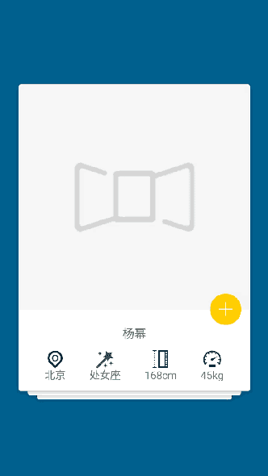

使用方法
首先，你需要导入模块项目或者添加依赖类库：
dependencies {
compile ' online.osslab:SwipeCard:1.0.0'
}核心用法：AdapterView
swipeCardView = (SwipeCardView)findViewById(R.id.swipeCardView);
// swipeCardView.setIsNeedSwipe(true); // 是否开启swipe滑动效果，当不调用此方法设置时，默认开启；
swipeCardView.setSwipeListener(this);
swipeCardView.setOnItemClickListener(this);
样式文件：XML
<online.osslab.SwipeCardView
xmlns:swipe="http://schemas.android.com/apk/res-auto"
android:id="@+id/swipeCardView"
android:layout_width="match_parent"
android:layout_height="match_parent"
swipe:min_adapter_stack="4"
swipe:max_visible="4"
swipe:vertical_offset="28dp" />回调方法
- onSwipeListener
@Override
public void removeFirstObjectInAdapter (){
adapter.remove(0);
}
@Override
public void onLeftCardExit(Object dataObject){
// 向左滑动
}
@Override
public void onRightCardExit(Object dataObject){
// 向右滑动
}
@Override
public void onAdapterAboutToEmpty(int itemsInAdapter){
if (itemsInAdapter == 3){
loadData();
}
}
- OnItemClickListener
@Override
public void onItemClicked(MotionEvent event, View view, Object dataObject){
if(view.getTag() instanceof ViewHolder){
int x = (int) int.getRawX();
int y = (int) int.getRawY();
ViewHolder vh = (ViewHolder) view.getTag();
View child = vh.portraitView;
Rect outRect = new Rect();
child.getGlobalVisibleRect(outRect);
if (outRect.contains(x, y)){
// 查看详情
} else {
outRect.setEmpty();
child = vh.collectView;
child.getGlobalVisibleRect(outRect);
if (outRect.contains(x, y)){
// 关注明星
}
}
}
}
演示示例
360应用市场 - 小米应用商店 - 豌豆荚 - 应用宝 - 安卓市场

联系作者
开发许可
Copyright 2016 Lopez Mikhae
Licensed under the Apache License, Version 2.0 (the "License");
you may not use this file except in compliance with the License.
You may obtain a copy of the License at
http://www.apache.org/licenses/LICENSE-2.0
Unless required by applicable law or agreed to in writing, software
distributed under the License is distributed on an "AS IS" BASIS,
WITHOUT WARRANTIES OR CONDITIONS OF ANY KIND, either express or implied.
See the License for the specific language governing permissions and
limitations under the License.